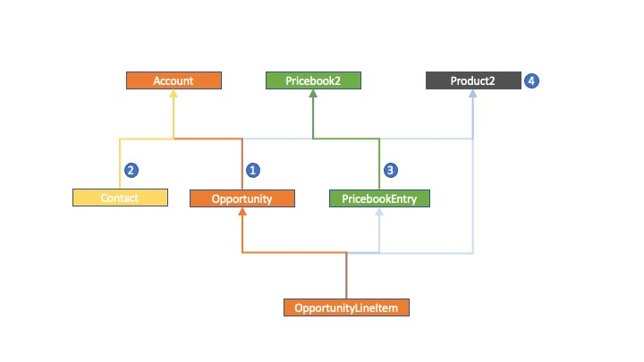
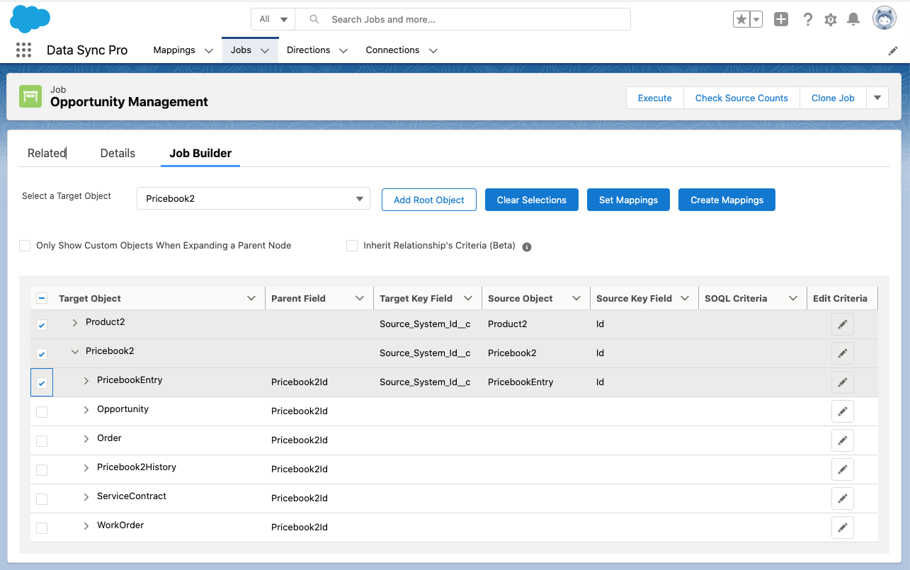
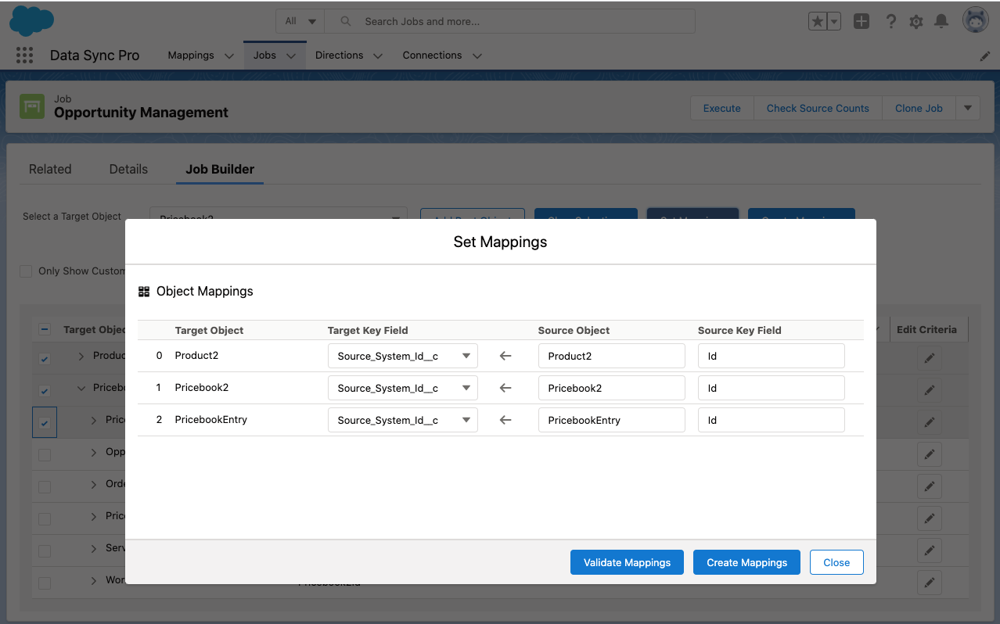
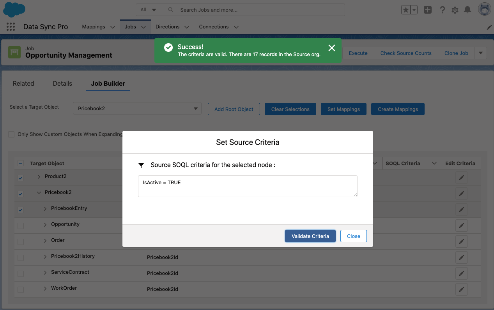

Pipeline Builder
Pipeline Builder is a powerful tool that helps create a comprehensive list of sequential Executables to associate with a Pipeline, with object relationships adequately maintained, a subset of source data defined, and execution order determined.
Steps & Logics
The following are the brief steps required to create Executables for a Pipeline.
- Add root target Objects to the tree grid.
- Expand on each node which lists the child Objects and their reference field automatically, keep expanding until you find the Object lowest in the hierarchy.
- Select the leaf node, which opens up a modal populated with all objects in the path from the selected leaf node to the root object.
- Fill out the mappings - select a External ID Field(if any) as the Target Matching Field for each target Object, confirm or update the Source Object, and type the Source Key Field to map with the Target Matching Field.
- Close the model to continue selecting other Objects in the tree grid and/or set retrieve criteria for particular nodes.
- Once all Objects required in the Pipeline are selected and mapped out, and required criteria are configured, click the button "Create Default Executables".
Understanding the logic that Pipeline Builder performs after clicking "Create Default Executables" will help with knowing better on the order the Objects should be added to the grid and what the default settings are after Executables are created. The section Determine Sequence depicts the algorithmatic way of determing the object sequence, which might be a little too much for beginners. But having a good prediction on what's going to happen here, it should be just as simple as following your gut feelings as long as your data model is not too complicated.
The Logic of Creating Default Execuables:
- The sequence of Executables is what you see from the top to the bottom in the tree grid.
-
The settings on the generated Excutables are defaulted based on the default values defined in the Executable object,
for example, Action is "Upsert", Batchable is checked, and Batch Size is 200. The following fields are set based on the configurations in Pipeline Builder:
- Pipeline = [Current Pipeline]
- Name = [Target Object Name]
- Executable API Name = [Pipeline Name + "_" + Target Object Name + "_" + Random Number]
- Target Object Name = [Target Object Name]
- Source Object Name = [Source Object Name]
- Target Matching Field = [Selected External ID Field]
- Retrieve Parameters = [Node Criteria + Criteria Inherited from the Hierarchy(if applicable)]
-
Default Field Mappings:
- The Target Matching Field is mapped with the Source Key Field you provided.
- For non-reference type of fields, if the source and target have the same type and API name, Pipeline Builder creates an exact mapping for each field.
- For reference type of fields, if the source and target have the same API name and the reference-to Object is selected in the tree grid preceeding the current Object, Pipeline Builder generates the mapping using the External Id Field selected in the preceding Object
- The rest fields remain as unmapped.
- If the Criteria is defined for a node, it will be added to the "Retrieve Parameters" field on the created Executable. If "Cascade Criteria to Child Objects in Hierarchy" is selected, the ancestor's Criteria is cascaded down to the child Objects' Executable along the hierarchical path(5 levels maximum).
Quick Example
To see how easily this can be done, let us first take an example of migrating data for a list of objects related to the Opportunity Management. In a nutshell, two major steps are required to create the relevant Executables.
-
Identify the dependency Paths as described in the Determine Sequence section.
Data Model
-
Add the objects path by path to the tree grid, in the reversed order as the sequence
identified above, select the leaf nodes and fill out the required mapping details,
then hit the "Create Default Executables" button, see the demo video below and the instructions Create Default Executables.
Create Default Executables
- Go to the Pipeline record where the new Executables will be created and assiciated to it, click the Pipeline Builder tab.
- Add the root object of the next available path to the tree grid.
Note:
Check the process Determine Sequence for the systematic approach.
- Expand the root object all the way down to the leaf node of the path.
- Check the leaf node which will result in all the objects in the path being selected.

- The Set Mappings modal pops up automatically. The order of the Mappings displayed
is the same order when the Executables are created successfully.
Select the External Id Field for the target objects, map out the Source Objects and the Source Key
Fields. Click Validate Mappings to make sure the settings are valid.

- Repeat step 2 thru step 5 to add the next paths (in reversed order).
-
If there is a need to add criteria to an Executable for retrieving the source data, click the edit icon
on the right of the node, fill out the criteria and
click Validate Criteria to check the validation, which if successful will show how many
records are there in the source object for the criteria defined.

Check "Cascade Criteria to Child Objects in Hierarchy" if you wish to have the child Objects inherits the criteria defined in their upper hierarchy along the same path, up to 5 levels. If there is a need for an Objects to inherit criteria from multiple paths, make sure the same object is selected in those paths, in which scenario, the Pipeline Builder will only create one Executable for that object, but combines criteria inherited from multiple paths.
Note:
During the creation of the Executables, the field and object level mappings are being validated, but the criteria is not. Make sure you validate it while defining it on the screen.

- Click “Create Default Executables”, the Pipeline Builder generates the Executables along with the default Field Mappings and the Criteria, then reloads the page.
Note:
- Pipeline Builder is the most efficient way of creating a list of related Executables, but it's not the only way. For example, you may still want to create individual Executable records and set up their Field Mappings manually if the default settings here are not what you wanted(for instance, your Executable's Action should be "Delete" instead of "Upsert."), or if you don't feel comfortable using the Pipeline Builder. Manually creating Executables in DSP is still a very efficient process.
- The Pipeline Builder only supports target Objects having External ID fields.
- Make sure to validate and tailor with default generated Executables and Field Mappings before execution.
- After the Executables are created, Pipeline Builder's tree grid is reset to scratch. New Executables created via Pipeline Builder will be brand new Executables added to the Pipeline.
- Only the preceeding Executables will be mapped the relational fields in the later generaged Executables.